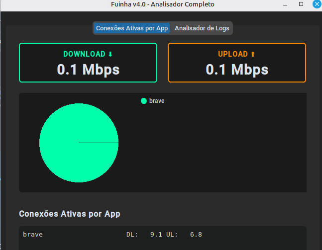
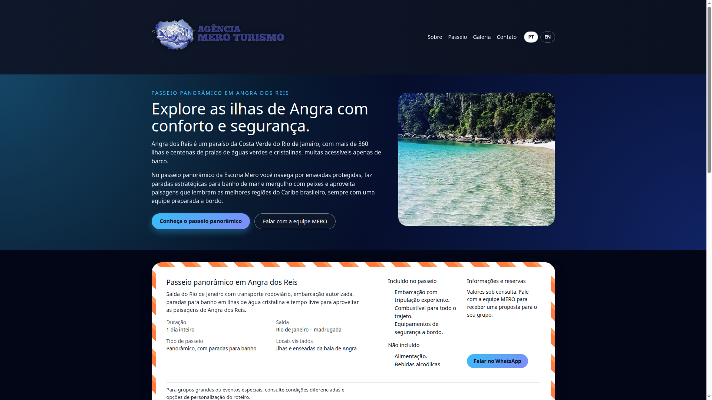
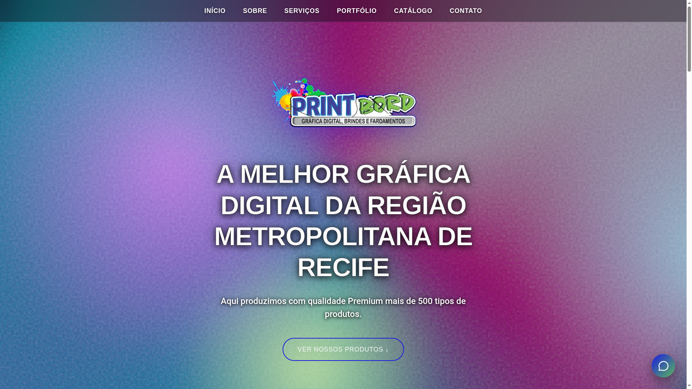

Vinicius Lacerda
Desenvolvedor de Software & Pesquisador de Segurança
Construindo aplicações web modernas, seguras e de alta performance. Unindo a precisão da lógica de programação com o olhar analítico da segurança da informação.
Sobre Mim
Sou graduando em Análise e Desenvolvimento de Sistemas e um desenvolvedor movido pelo desafio de traduzir lógica complexa em código limpo, eficiente e seguro.
Minha trajetória combina uma sólida bagagem técnica em infraestrutura de redes com a paixão pelo desenvolvimento de software moderno me aprimorando em DevOps e Cibersegurança.
Atualmente, divido o meu foco entre a criação de interfaces web responsivas e o desenvolvimento de ferramentas de backend automatizadas — como analisadores de logs em Python e aplicações estruturadas em microsserviços com Docker.
Minha filosofia de trabalho é moldada pela disciplina e constância do Karate: acredito que a busca pela excelência técnica, a atenção aos detalhes e a resiliência são fundamentais para solucionar problemas complexos. Estou pronto para conectar essa mentalidade a ambientes de inovação e tecnologia de ponta, contribuindo ativamente para o ecossistema tecnológico.
Acredito que a tecnologia existe para aproximar pessoas e impulsionar negócios. Ser desenvolvedor me permite conectar com diferentes mundos, conhecer novas histórias e gerar um impacto direto e positivo na vida de clientes e usuários através de soluções eficientes e seguras.
Web
DevOps & Segurança
Bancos de Dados & Ferramentas
Meus Projetos

Fuinha Network Monitor
Um monitor de rede em tempo real feito em Python. Identifica processos gerando tráfego e fornece insights de segurança na interface.
Ver no GitHub
Escuna Mero Turismo
Website moderno desenvolvido em Next.js e React para empresa de passeios tropicais. Design focado na experiência do usuário.
Ver Site Online
PrintBord Landing Page
Landing page construída com Vite, React e TypeScript para promover serviços de impressão e comunicação visual.
Ver Site Online